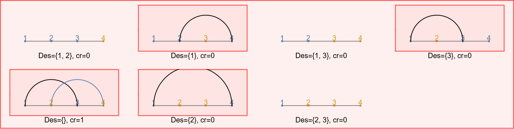
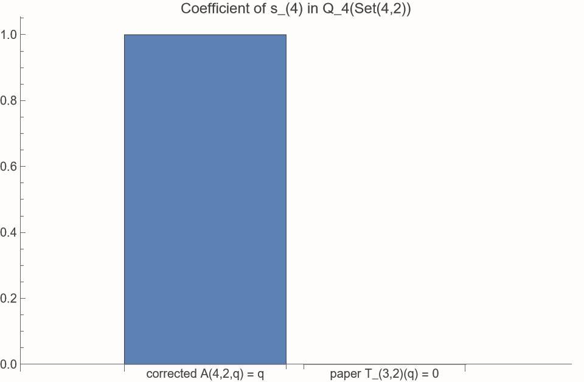

The theorem that failed at (4, 2): a MantiQ Factor audit of Bagno-Garber
The paper "Touchard-Riordan Polynomials and Schur-positivity of Set Partitions" (arXiv:2606.13149) audited by computer: one counterexample, one corrected theorem, one structural lemma, and a fully reproducible Mathematica + Lean 4 workflow

Embedded software consultancy in Israel for over 20 years. This brief documents the MantiQ Factor workflow: Mathematica as the symbolic workbench, cross-checked in Python, guarded in Lean 4, applied to a live combinatorics paper.
linkedin.com/in/liezrowiceTable of contents
Eighteen slides: the paper, the audit, the failure, the correction, the formal guard, and what Dr. Bagno gains
The object: a q-weighted quasisymmetric sum over set partitions
Set(n, ell) = set partitions of [n] into ell blocks; each partition pi contributes qcr(pi) Fn, Des(pi)
- Des(pi) = { i : i and i+1 lie in the same block }
- cr(pi) = number of crossing arc pairs; arcs connect consecutive elements of a block
- Fn,D = Gessel's fundamental quasisymmetric function, paper Def. 2.3 with rises REQUIRED at D
- s(n-k, 1k) = hook Schur functions: a basis of degree-n symmetric functions
Because every Fn,D is symmetric, Qn(Set(n, ell)) expands uniquely in the hook Schur basis. The whole paper is about the coefficients.
PartitionArcDiagram: Des and cr annotated per partition

Theorem 3.1 as claimed: hook coefficients are Touchard-Riordan values
Qn(Set(n, ell)) = ∑k Tn-1-k, n-k-ell(q) · s(n-k, 1k), where Ta,b(q) = C(a, 2b) T2b(q)
Each hook Schur coefficient of the q-weighted sum should be the classical Touchard-Riordan polynomial: the crossing polynomial of all matchings on a fixed point set, scaled by a binomial.
The heuristic: the paper's proof maps each partition to a chord diagram and transfers the Touchard-Riordan enumeration of matchings to the left side. The transfer step is where it breaks.
Both sides are explicit finite sums for small n. Transcribe the definitions once, compute both sides as polynomials in q and the variables x1, ..., xn, and subtract. No insight required, only exactness.
The smallest instance already decides: (n, ell) = (4, 2).
The MantiQ Factor: six steps, three systems, one ledger
Nothing is claimed that is not executable somewhere: the claim-by-claim ledger is docs/formalization_map.md in the repo
How the computer checks a Schur-positivity claim
Expand in variables, decompose into hook Schur functions by h-e pivoting, compare coefficients
QSet[n, ell, q, vars]: enumerates all rgs partitions, weights each by q^cr times its fundamental quasisymmetric monomial sumHookSchur[a, b, vars]: s_(a,1^b) = ∑j (-1)j ha+j eb-j, with h and e computed from integer partitionspolyDiffZero: the verdict primitive: Expand, Simplify, ask for identically 0
The failure is structural: T3,2(q) = C(3, 4) T4(q) = 0 because C(3, 4) = 0, while the true coefficient is the monomial q. A floating-point workflow could hide this; an exact one cannot.
The corrected coefficient A(m, ell, q) is a sum of monomials with nonnegative integer coefficients by construction, so Schur-positivity is visible by inspection, not by proof.
The counterexample: (n, ell) = (4, 2), hook k = 0
The coefficient of s_(4) is q on the left, 0 on the right: one adjacency-free partition with one crossing against an impossible binomial


Exactly one partition of [4] into 2 blocks has empty descent set and a crossing: {{1,3},{2,4}}, with cr = 1. The s_(4) coefficient is q.
T3,2(q) = C(3, 4) T4(q) = 0: no matching on 3 points has 4 chords. The claim cannot hold anywhere the binomial vanishes while the left side does not.
When does Theorem 3.1 hold? A clean census
Sweeping 2 ≤ ell ≤ n ≤ 7 in three systems: holds exactly at the boundary, fails exactly on the interior
| Regime | (n, ell) with the paper's identity | Why |
|---|---|---|
| ell = 1 | all n | one block: no descents, no crossings; reduces to e_n = s_(1^n) |
| ell = n | all n | all singletons: s_(n), trivially both sides |
| n - ell = 1 | all n | Touchard-Riordan and adjacency-free coefficients coincide here |
| ell ≥ 2 and n - ell ≥ 2 | (4,2) (5,2) (5,3) (6,2) (6,3) (6,4) (7,2) (7,3) (7,4) (7,5) | all fail, starting at (4, 2) |
Why the proof breaks: the chord-diagram map is injective, not surjective
The paper's transfer step treats partition fibers as if they were as rich as full matching classes; they are not
That the q-weight of a fiber of the chord-diagram map is governed by the Touchard-Riordan polynomial of a full matching class. That would require the map to hit every chord diagram in the class.
The map is one-to-one: every partition determines its chord diagram. But chord diagrams whose chords force forbidden adjacencies are never hit. The surviving fibers are the D-runs, and they force the shift n → n - |D| (slide 10).
The collapse lemma: the descent set only shifts
For EVERY descent set D, the crossing polynomial of the Des = D fiber equals A(n - |D|, ell, q)
cD(n, ell) = A(n - |D|, ell, q), where A(m, ell, q) is the crossing polynomial of the adjacency-free partitions (Des = empty) of [m] into ell blocks.
Collapsing each maximal run of adjacent same-block elements removes a controlled local contribution; what remains is an adjacency-free partition of the remaining m points, and cr(pi) = cr(collapse(pi)). The fibers of the collapse map are the D-runs.
- Wolfram: all D for (n, ell) up to n = 6 (suite V3) and the (4, 2) spot checks (A10)
- Python: all D, n ≤ 5 (V3)
- Lean: (4, 2) over all 8 descent sets, (5, 3) over all 16, and every (n, ell) with n ≤ 4 (theorems collapse_4_2_allD, collapse_5_3_allD, collapse_all_n4)
The corrected theorem, and why it is better than a repair
Qn(Set(n, ell)) = ∑k=0..n-ell A(n-k, ell, q) · s(n-k, 1k), with A(m, ell, q) = ∑pi adjacency-free qcr(pi)
Every coefficient is a sum of monomials with nonnegative integer coefficients by construction. Schur-positivity is visible, not proven.
The s_(n-k, 1^k) coefficient literally counts crossings in one well-defined class of partitions: adjacency-free ones. A student can draw it.
At ell = 1: collapses to e_n = s_(1^n). At ell = n: s_(n). At n - ell = 1: A coincides with Touchard-Riordan, explaining why the paper's identity looked right in its tested regimes.
The coefficients A(m, ell, q), computed and tabulated
Row m, column ell; from exports/A_coefficients_table.csv, exact output of ACoeff[m, ell, q]
| m \ ell | 1 | 2 | 3 | 4 | 5 | 6 | 7 |
|---|---|---|---|---|---|---|---|
| 1 | 1 | ||||||
| 2 | 0 | 1 | |||||
| 3 | 0 | 1 | 1 | ||||
| 4 | 0 | q | 3 | 1 | |||
| 5 | 0 | q2 | 2 + 5q | 6 | 1 | ||
| 6 | 0 | q3 | 5q + 9q2 + q3 | 10 + 15q | 10 | 1 | |
| 7 | 0 | q4 | 9q2 + 16q3 + 5q4 + q5 | 5 + 36q + 42q2 + 7q3 | 30 + 35q | 15 | 1 |
Two new identities for the adjacency-free counts
The corrected coefficients extend the Stirling numbers, and their row sums are Bell numbers shifted by one
a(m, ell) = A(m, ell, 1) = ∑j (-1)j C(m-1, j) S(m-j, ell), with S the Stirling numbers of the second kind.
Verified: Wolfram m ≤ 6, Python, Lean (inclusionExclusion_2_5, m ≤ 5).
∑ell a(m, ell) = Bell(m-1): adjacency-free partitions of [m] correspond bijectively to set partitions of [m-1].
Verified: Wolfram m ≤ 6 (A11), Python (V9, to m = 7), Lean m ≤ 6 (bell_2_6). Row m = 5: 0 + 1 + 7 + 6 + 1 = 15 = Bell(4).
The noncrossing corollary is correct: Motzkin triangle and Narayana
Corollary 3.3 (3), (4) hold, with the coefficients identified exactly as Motzkin triangle numbers
ANC(m, ell) = number of noncrossing configurations on m-1 points with exactly m-ell chords: a Motzkin triangle number. Row sums are Motzkin numbers M(m-1); hook totals recover Narayana(n, ell) = C(n, ell) C(n, ell-1) / n.
Row m = 5: 0, 0, 2, 6, 1 with sum 9 = M(4). Verified m ≤ 7 in Wolfram and Python, m ≤ 7 in Lean (triangle_2_6, motzRows_2_7, narayana_2_5).
The Lean 4 companion: pure core, twelve theorems, no trusted algebra kernel
lean/Verify.lean re-derives the counting layer from first-order definitions; lake build proves everything by evaluation
- rgs partitions, descent sets, arcs, crossings (first-order definitions)
- A(4, 2) = [0, 1] ≠ 0 against T3,2 = 0: the counterexample (A_4_2, T_3_2, counterexample_4_2)
- Census n ≤ 5: fails exactly {(4,2), (5,2), (5,3)} (census_5)
- Collapse lemma over every descent set (3 theorems)
- Bell, inclusion-exclusion, Motzkin triangle, Motzkin rows, Narayana (5 theorems)
A computer-algebra system can share a mistaken assumption with itself. Lean re-derives every fact from first-order definitions, so agreement between the two systems is strong evidence that a claim is a theorem of the combinatorics, not an artifact of one codebase.
Touchard-Riordan polynomials themselves are computed in Lean by enumerating all matchings and counting crossings: nothing is hardcoded.
What Dr. Bagno gains from this workflow
The point is not that a theorem failed; it is how cheap the failure was to find, and how much stronger the corrected statement is
Exact polynomial algebra, Schur decomposition, q-series, and Manipulate teaching material in one notebook. The whole audit ran in 19 seconds of wolframscript time. For enumeration-heavy combinatorics, this is the fastest path from a definition to a verified computation.
A census the size of this one (about 40 (n, ell) pairs by n = 7) is infeasible by hand and trivial by computer. Running it before submission converts referee reports into reading appointments.
Once the corrected theorem's small cases are in Lean, the statement cannot silently change meaning in a revision, and collaborators can re-verify in one command.
The package, notebook, and Lean project are public and MIT-of-effort reusable: every claim in Dr. Bagno's paper now has an executable checking home. Applying the same six-step loop to the other theorems of the paper (the full Schur-positivity statements) is a natural next collaboration.
"Fails exactly when ell ≥ 2 and n - ell ≥ 2" is verified to n = 7. The collapse lemma reduces a proof to comparing A(m, ell, q) with Touchard-Riordan values: a well-posed problem with computational support already in place.
Everything reruns from the public repo in minutes
github.com/zuwasi/mantiq-touchard-riordan: Mathematica lane, Python lane, Lean lane, teaching notebook
Mathematica finds it, Python confirms it, Lean keeps it
The MantiQ Factor loop applied to a live research paper: counterexample at (4, 2), corrected theorem with adjacency-free coefficients, collapse lemma, Motzkin-Narayana corollary confirmed, all reproducible from the public repo
ESL builds verification workflows for engineering mathematics: computer algebra as the workbench, independent cross-checks as the validator, formal proof as the deposit box. This audit is a complete worked example on a published combinatorics paper.
eswlab.com · Contact ESL · Paper: arXiv:2606.13149 · Repo: github.com/zuwasi/mantiq-touchard-riordan